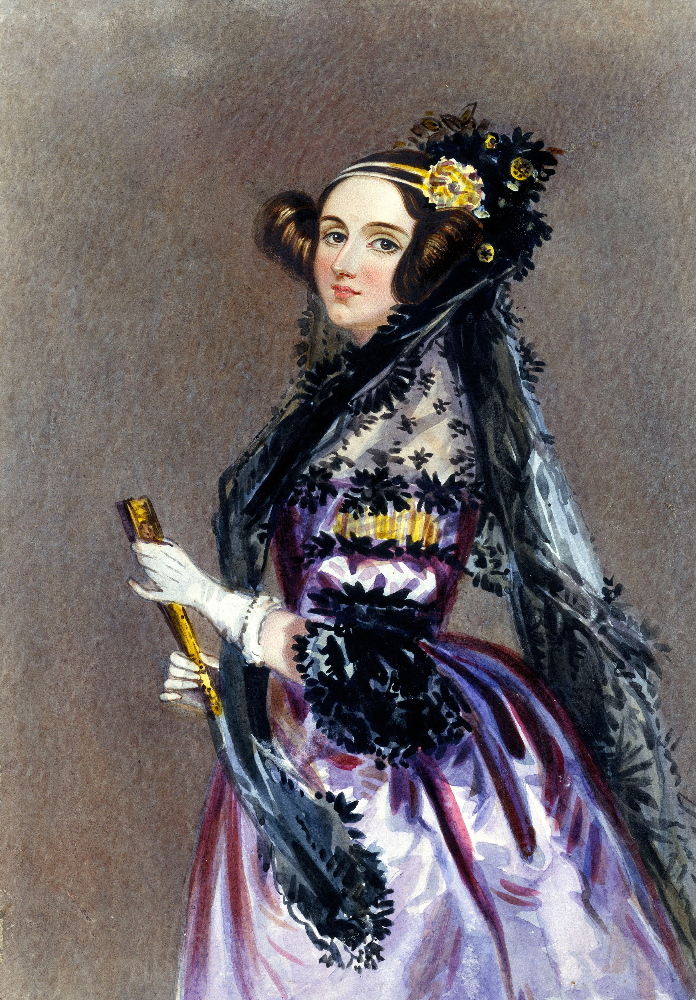
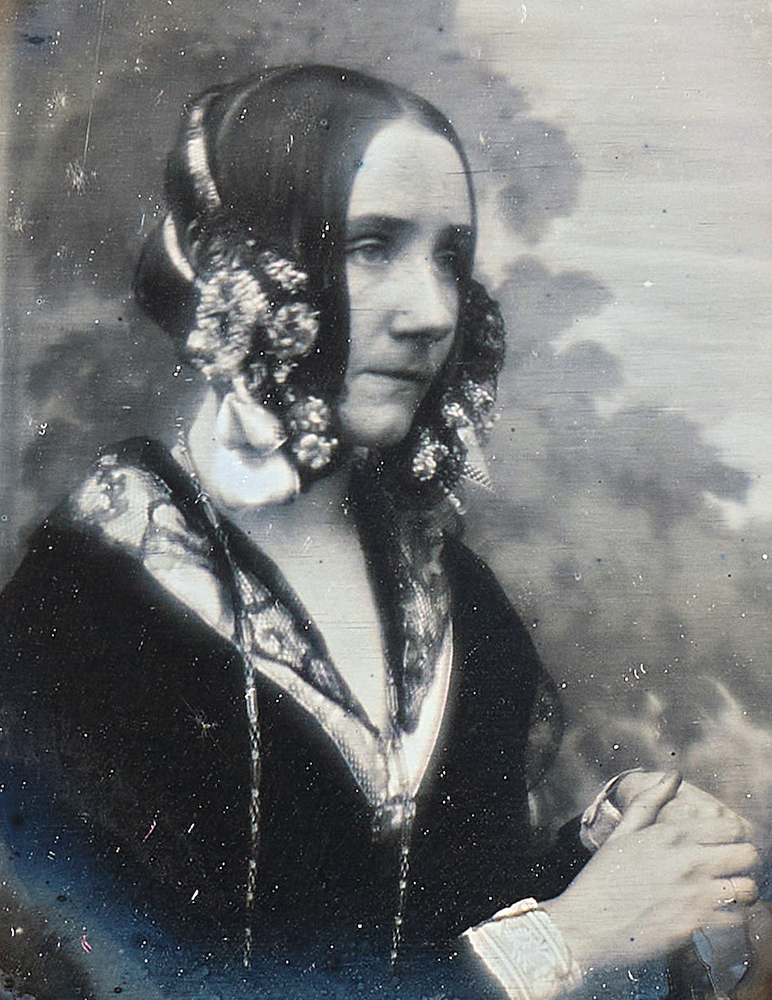
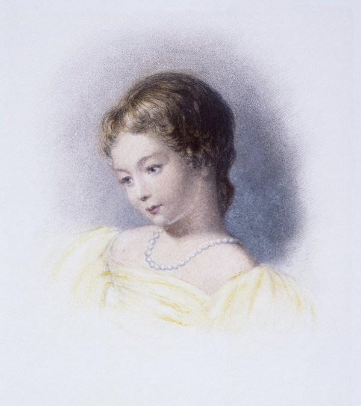
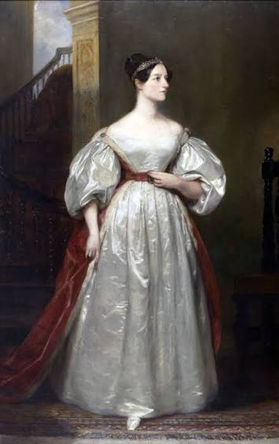
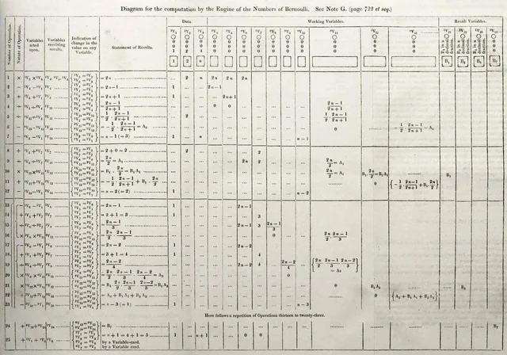
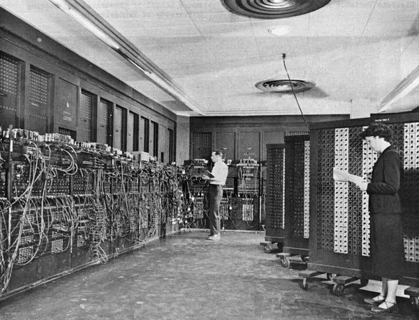

Uma mente
à frente do tempo.
Ada Lovelace enxergou poesia, música e possibilidades onde outros viam apenas números.
Conheça sua história
VISIONARY

UMA VIDA ENTRE LÓGICA E IMAGINAÇÃO
Ela imaginou o que
ainda não existia.
Augusta Ada King, conhecida como Ada Lovelace, nasceu em Londres em 1815. Matemática e escritora, colaborou intelectualmente com Charles Babbage, que idealizou a Máquina Analítica.
Em suas notas sobre a máquina, Ada descreveu um método para calcular números de Bernoulli. Seu trabalho é lembrado como um marco inicial da programação e por sua visão de que máquinas poderiam manipular símbolos, não apenas números.
Quem moldou sua mente.
Ada cresceu entre poesia, ciência e muita disciplina.
Lord Byron
Poeta romântico. Ada nunca conviveu com ele: os pais se separaram quando ela tinha poucos meses.
Annabella Milbanke
Apaixonada por matemática, incentivou a filha a estudar ciências e lógica desde cedo.
Somerville e De Morgan
Mary Somerville a apresentou a Babbage; Augustus De Morgan orientou seus estudos de matemática.
Charles Babbage
Idealizador da Máquina Analítica, o projeto que inspirou as famosas notas de Ada.
Uma vida em movimento.
De uma infância curiosa a ideias que atravessaram gerações.
1815 → 1852 37 anos entre duas datas que marcaram a história
O pensamento que
abriu caminhos.
Ada viu possibilidades que iam além do uso imediato das máquinas. Sua contribuição une precisão matemática e imaginação.
Uma sequência de instruções
Suas notas incluíram um procedimento para calcular números de Bernoulli na Máquina Analítica, frequentemente descrito como o primeiro algoritmo publicado para uma máquina.
Máquinas além dos números
Ada imaginou que máquinas poderiam trabalhar com símbolos e, em princípio, criar música ou representar outras formas de informação.
Uma referência duradoura
Seu nome foi dado à linguagem de programação Ada, desenvolvida décadas depois, em reconhecimento à sua contribuição histórica.
Brinque com os números de Bernoulli.
Na Nota G, Ada descreveu como a Máquina Analítica poderia calcular números de Bernoulli passo a passo. Escolha um índice e veja o resultado em fração exata, algo que ela precisava planejar à mão.
Fragmentos de uma história.




